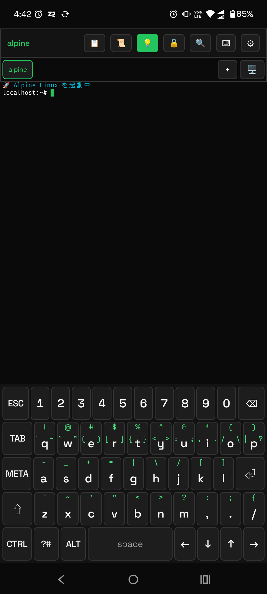
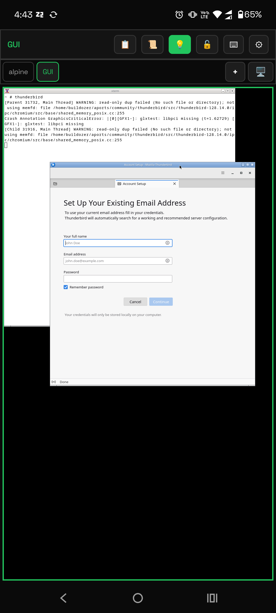

Zero 2 Terminal · GPL-3.0 · Android 10+
Z2Term は Alpine / Ubuntu / Arch / Kali を root 不要で動かし、 タブの中に Linux のデスクトップを開き、シェルから端末そのものに手を伸ばせます。 通知を読む、通知シェードの返信欄であなたに質問する、充電・ネットワーク・受信 SMS の変化で スクリプトを走らせる — そういうことができます。
root 不要 · PC 不要 · テレメトリなし · Google Play では配布していません
以下はすべて APK 1 つに入っています。コンパニオンアプリもセットアップスクリプトも要りません。
APK を入れれば apk / apt / pacman が使えます。既定の実行エンジン
z2root は本アプリ用に書いた ptrace ベースのユーザ空間実装で、root もカーネルモジュールも不要。
PRoot と chroot にも切り替えられます。
約 20 個の z2-* コマンド。通知・クリップボード・センサー・ライト・Intent・アラーム・読み上げ、
そして自端末への無線 adb。z2-ask は通知シェードに質問を出し、
返信をシェル変数として受け取ります。
z2-when が端末のイベントでスクリプトを起動します — 充電、電池残量、時刻や cron、Wi-Fi、
回線の切り替わり、起動、他アプリからの共有、受信 SMS、センサー、届いた通知、ファイルの追加。
ルールはテキストファイルで、再起動をまたいで生き残ります。
Xvnc + openbox を、アプリ内蔵の RFB クライアントで表示します。音声・動画つき。
z2gui でデスクトップを起動、z2run <app> で GUI アプリを起動して
タブまで開きます。
かな漢字変換・予測・学習（頻度と直近）を備えた IME と独自のオンスクリーンキーボードを内蔵。 OS の入力メソッドとして有効化すれば他アプリでも同じ変換が使えます。ユーザー辞書はファイルから読み込み。
SSH / SFTP クライアント（鍵は Android Keystore が保持）、タブを閉じても生き続けるポートフォワード、
既定で localhost のみに bind する内蔵 sshd。
任意の起動コマンドを 設定 → 常駐サーバーに登録すると、アプリを開かなくても バックグラウンドで動き続けます。小さな Web サーバー、同期デーモン、bot を手元のスマホで常駐。 稼働数はホーム画面ウィジェットに出て、再起動後の復帰も面倒を見ます。
左: Alpine と独自キーボード。右: Xvnc 上で動く GUI アプリ。


# 通知シェードから答えてもらう name=$(z2-ask "ブランチ名は？") \ || echo "やめた" # 端末のイベントで走らせる z2-when charge:start run ~/sync.sh z2-when net:online if=ssid=Home \ cooldown=1h run ~/backup.sh
# シェルから Linux デスクトップ z2gui z2run firefox # 動かないときはこれ 1 つ z2doctor --clip # PC なしで自端末の adb z2adb shell getprop ro.product.model
最大のパッケージ資産と実績が欲しいなら Termux が正解です。Z2Term は別の問いから作られています — ターミナルが「端末を操作する正面の手段」になり、しかも APK 1 つで完結したらどうなるか。
| Z2Term | Termux + アドオン群 | |
|---|---|---|
| Linux ディストロ | Alpine 同梱で初回から使える。Ubuntu / Arch / Kali も導入可 | パッケージで導入する |
| Linux GUI | アプリ内に GUI タブ（Xvnc + RFB クライアント）。音声・動画つき | 別途 X11 / VNC ビューアアプリ |
| シェルから Android を操作 | 内蔵 — 約 20 個の z2-* | 別アプリ（コンパニオン） |
| イベント駆動の自動化 | 内蔵 — z2-when。専用タブ・実行ログ・一括停止つき | 別アプリ + 多くは市販の自動化アプリと併用 |
| 日本語入力 | IME 内蔵。OS の入力メソッドとしても選べる | OS のキーボード |
SSH / SFTP と sshd | 内蔵。鍵は Android Keystore | 自分でパッケージを入れる |
| 配布 | GitHub Releases | F-Droid と独自リポジトリ |
どちらも GPL-3.0 で、どちらもテレメトリを取りません。すでに満足している Termux 環境がある人にとって、 Z2Term の存在理由は上の表の 2・3・4 行目です。
各リリースに APK が 2 つ付きます。端末でファイルをタップし、提供元不明のアプリのインストールを許可してください。
| ファイル | 中身 | 選び方 |
|---|---|---|
app-foss-release.apk | prebuilt 非同梱（約 21 MB） | こちらがおすすめ。約 9 分の 1 で、更新のたびのダウンロードも約 21 MB。従量制や遅い回線で効く。外部 prebuilt も同梱しない。Alpine は初回だけ取得し SHA-256 で検証、更新時に再取得しない |
app-full-release.apk | PRoot と Alpine rootfs を同梱（約 190 MB） | 初回からオフラインで使いたいとき。ディストロが中にあり初回のダウンロードが不要。そのぶん本体も更新も毎回約 190 MB |
どちらも同じアプリで、違いは Alpine を初回に 1 回だけダウンロードするかどうかだけです。 自動更新にしても毎回 APK 全体をダウンロードするので（Play 以外に差分更新は無い）、容量差は更新のたびに効きます。
アプリ内の更新チェックはありません。 Obtainium に本リポジトリを登録すると、 新リリース時にワンタップで更新できます（ストア不要）。
版数はまだ 0.8.x-alpha です。機能は広く毎日使われていますが、版数はそのことに正直にしています。